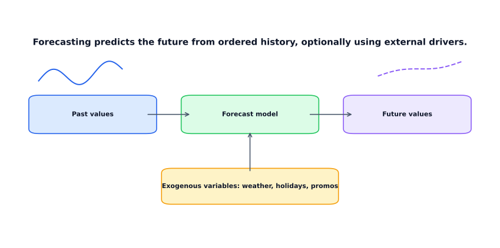
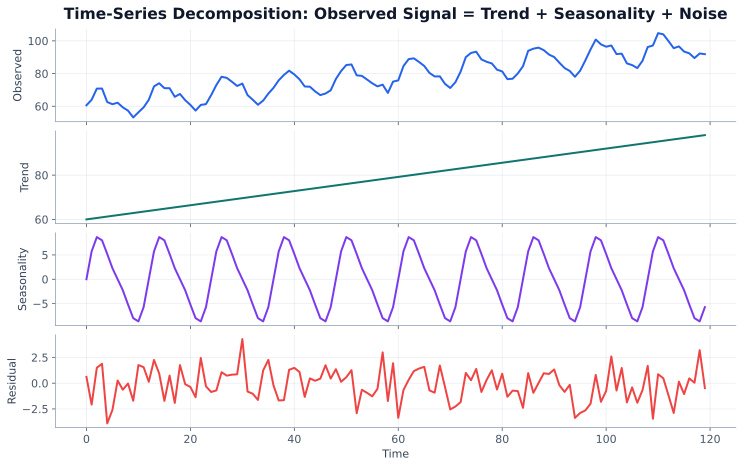
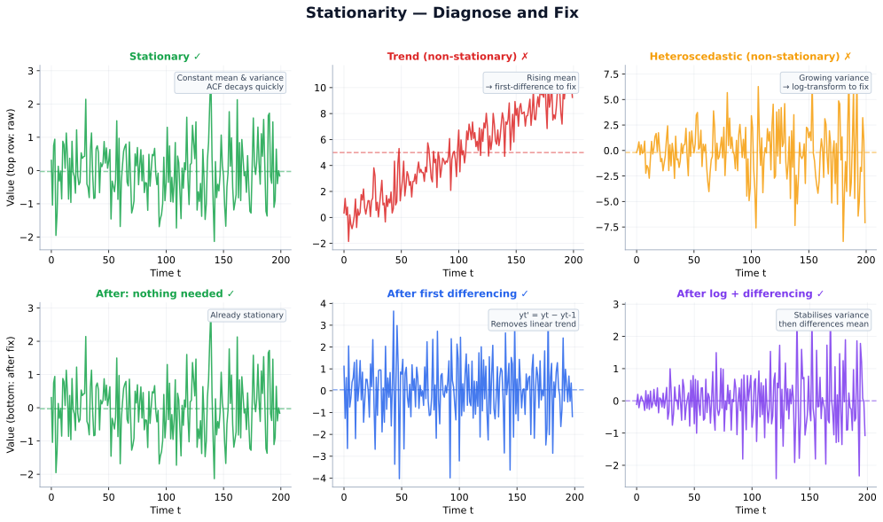
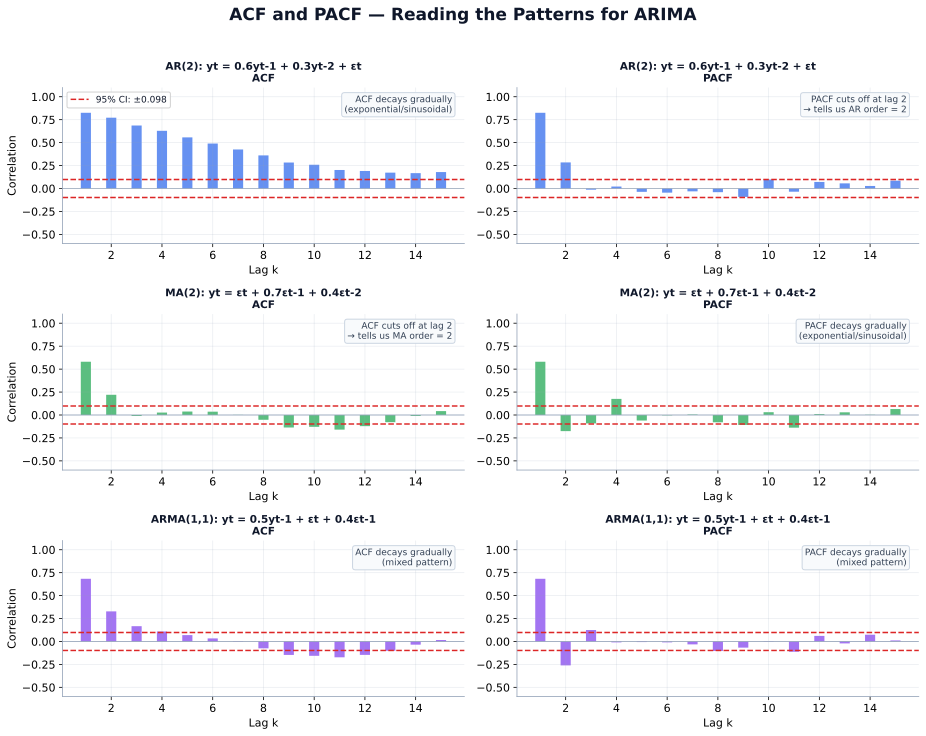
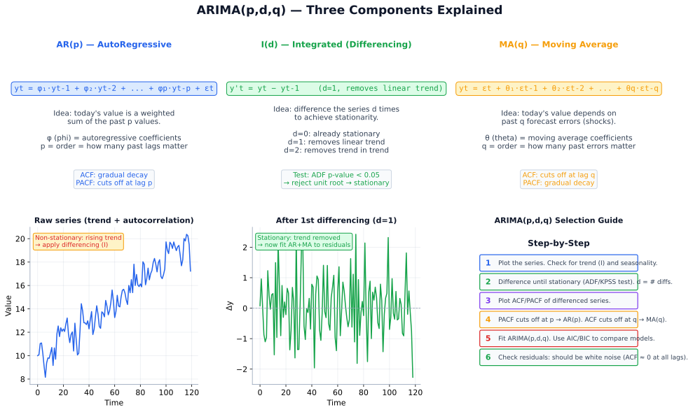
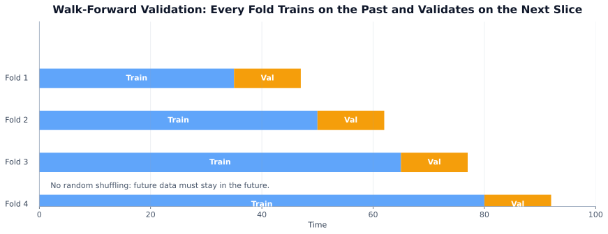

Explore this chapter with hands-on visualizations: Decomposition, ARIMA Explorer, Forecasting Comparison, Stationarity | Autocorrelation Explorer
Tabular ML treats each row as independent. Time series breaks that assumption — the order matters, and yesterday’s value is often the best predictor of today’s.
Time series forecasting shows up everywhere: demand planning, financial markets, energy grids, staffing, inventory. The core challenge is that you must predict the future without using it during training — a constraint that changes how you split data, engineer features, and evaluate models. This chapter builds from classical decomposition and ARIMA through modern ML and deep learning approaches, ending with production-grade forecasting systems.
Goal: predict future values from ordered history, with optional external signals like weather, holidays, or promotions.

Key: Forecasting = predict future from ordered history, not i.i.d. samples.
What you will learn:
| Section | Topic |
|---|---|
| 12.1 | Time series fundamentals: decomposition, stationarity, ACF/PACF |
| 12.2 | Classical models: ARIMA, SARIMA |
| 12.3 | Prophet: trend, seasonality, holidays |
| 12.4 | Feature engineering for ML-based forecasting |
| 12.5 | ML models: LightGBM and XGBoost for time series |
| 12.6 | Deep learning: LSTM, N-BEATS, TFT |
| 12.7 | Evaluation: metrics and walk-forward validation |
| 12.8 | Production: feature stores, monitoring, hierarchical forecasting |
| 12.9 | Case study: energy and supply chain forecasting |
Prerequisites: Regression (Chapter 5), feature engineering (Chapter 4), basic probability and distributions (Chapter 1).
Time series = ordered observations, usually not i.i.d. Nearby points are statistically dependent; shuffling destroys signal.
Every observed time series can be decomposed into three components:

Additive model — seasonal amplitude is constant: \[y_t = T_t + S_t + e_t\]
Where: \(T_t\) = trend (long-run direction), \(S_t\) = seasonal component (periodic pattern), \(e_t\) = residual (noise).
Multiplicative model — seasonal amplitude grows with the level: \[y_t = T_t \times S_t \times e_t\]
Key: Use additive when seasonal swings are roughly constant in size. Use multiplicative when they scale with the series level (common in sales and economic data).
Classical models require the series to be stationary — stable statistical properties over time.
Weak stationarity requires:
What breaks stationarity:
Common fixes:
Key: Make the series only as stationary as the model requires. Over-differencing throws away useful signal.

Autocorrelation measures the relationship between \(y_t\) and its lagged values \(y_{t-k}\).
| Tool | What it measures | Typical use |
|---|---|---|
| ACF | Correlation at each lag, including indirect effects | Detect persistence, seasonality |
| PACF | Lag-\(k\) correlation after removing effects of shorter lags | Identify AR order for ARIMA |
ACF/PACF heuristics for ARIMA:
| Pattern | Suggests |
|---|---|
| ACF cuts off at lag \(q\), PACF decays gradually | MA(\(q\)) |
| ACF decays gradually, PACF cuts off at lag \(p\) | AR(\(p\)) |
| Both decay gradually | ARMA |
| Frequency | Examples |
|---|---|
| Yearly, quarterly | GDP, annual sales |
| Monthly | Subscriptions, billing |
| Weekly, daily | Retail demand, web traffic |
| Hourly, sub-hourly | Energy consumption, IoT sensors |
Finer granularity can expose multiple seasonalities — hour-of-day and day-of-week for example — which simpler models may struggle to capture.
Before fitting any model, establish a naive baseline:
| Baseline | Formula | When it works |
|---|---|---|
| Naive | \(\hat{y}_{t+1} = y_t\) | Random walk series |
| Seasonal naive | \(\hat{y}_t = y_{t-s}\) | Strong fixed seasonality |
| Moving average | Mean of last \(k\) periods | Smooth trend |
| Exponential smoothing | Weighted mean, recency-weighted | Gradual trend |
Key: If your model cannot beat seasonal naive, it is adding no value over guessing last year’s same period.
Never use random train-test splits for time series. The test set must come after the training set chronologically.
| Setup | Predicts | Main challenge |
|---|---|---|
| One-step-ahead | \(y_{t+1}\) | Simplest; errors do not accumulate |
| Multi-step | \(y_{t+1}, \dots, y_{t+h}\) | Error accumulation, horizon degradation |
| Univariate | Target history only | Misses external drivers |
| Multivariate / exogenous | Target + related variables | Feature alignment, future availability |

Classical forecasting models for series driven by past values, differencing, and correlated errors.
\[\text{ARIMA}(p, d, q)\]
| Component | Stands for | Role |
|---|---|---|
| AR | AutoRegressive | Uses past values \(y_{t-1}, \dots, y_{t-p}\) |
| I | Integrated | Differencing order \(d\) to achieve stationarity |
| MA | Moving Average | Uses past forecast errors \(\epsilon_{t-1}, \dots, \epsilon_{t-q}\) |
AR component: \[y_t = c + \phi_1 y_{t-1} + \phi_2 y_{t-2} + \dots + \phi_p y_{t-p} + \epsilon_t\]
Where: \(c\) = constant, \(\phi_1, \dots, \phi_p\) = AR coefficients, \(\epsilon_t\) = white noise error term.
MA component: \[y_t = c + \epsilon_t + \theta_1 \epsilon_{t-1} + \dots + \theta_q \epsilon_{t-q}\]
Where: \(\theta_1, \dots, \theta_q\) = MA coefficients (weights on past forecast errors).
The MA component uses past forecast errors, not a simple rolling average.
First differencing: \[y'_t = y_t - y_{t-1}\]
Second differencing: \[y''_t = y'_t - y'_{t-1}\]
\[\text{SARIMA}(p, d, q)(P, D, Q)_s\]
The seasonal part adds:
Seasonal differencing: \[y'_t = y_t - y_{t-s}\]
Key: SARIMA = ARIMA + explicit seasonal AR/MA/differencing at period \(s\).
Adding exogenous regressors: holidays, weather, promotions, price changes, macro signals. These are variables the model uses as inputs alongside the target’s own history.
| Strengths | Limitations |
|---|---|
| Interpretable coefficients | Assumes stable dynamics |
| Strong statistical baseline | Struggles with multiple seasonalities |
| Works with small to medium data | Order selection is fiddly |
| Confidence intervals built in | Weak on strong nonlinearities |
| Simple per-series fitting | One series at a time; not designed for global cross-series models |
from statsmodels.tsa.statespace.sarimax import SARIMAX
# y: pandas Series with DatetimeIndex
train = y.iloc[:-30]
test = y.iloc[-30:]
model = SARIMAX(train, order=(1,1,1), seasonal_order=(1,1,1,7))
fit = model.fit(disp=False)
forecast = fit.forecast(steps=len(test))
Prophet (Meta, 2017) is a forecasting library designed for business time series. It decomposes the signal into trend, seasonality, and holiday effects using an additive model.
\[y(t) = g(t) + s(t) + h(t) + \epsilon_t\]
| Component | Meaning |
|---|---|
| \(g(t)\) | Trend — long-run direction |
| \(s(t)\) | Seasonality — Fourier series representation |
| \(h(t)\) | Holiday/event effects — user-specified dates |
| \(\epsilon_t\) | Random error |
Key: Prophet = interpretable additive decomposition for calendar-driven forecasting.
Prophet automatically detects changepoints — moments where the trend rate shifts. You can control how many changepoints it considers and how flexible it is.
Two trend modes:
Prophet uses Fourier series to represent seasonality:
You pass in a DataFrame of known dates (public holidays, sale events, product launches) and Prophet learns a separate effect for each.
from prophet import Prophet
import pandas as pd
# DataFrame must have columns ds (date) and y (value)
df = pd.DataFrame({"ds": y.index, "y": y.values})
train = df.iloc[:-30]
model = Prophet()
model.fit(train)
future = model.make_future_dataframe(periods=30)
forecast = model.predict(future)
print(forecast[["ds", "yhat", "yhat_lower", "yhat_upper"]].tail())| Good fit | Poor fit |
|---|---|
| Strong calendar/seasonal structure | High-frequency noisy data |
| Trend changes over time | Strong short-lag autocorrelation dominates |
| Known holiday dates matter | Joint modeling across many series |
| Quick, interpretable baseline needed | Strict statistical inference required |
Key: Use Prophet when known calendar dates cause repeatable spikes or drops. For series dominated by short-lag autocorrelation, AR-based models usually win.
The core idea: convert time series forecasting into a standard supervised regression problem by creating time-based features.
Key: Every feature must use only information available at prediction time. The most common bug in time series ML is inadvertent leakage.
Lag features let the model explicitly use past values:
df["lag_1"] = df["y"].shift(1)
df["lag_7"] = df["y"].shift(7)
df["lag_14"] = df["y"].shift(14)
df["lag_28"] = df["y"].shift(28)Pick lags that match the natural rhythms of the series — if you have weekly data, \(t-7\) is often the most useful single feature.
Rolling and expanding summaries capture recent trend and variance:
# Shift by 1 before rolling to avoid using current value
df["roll_mean_7"] = df["y"].shift(1).rolling(7).mean()
df["roll_std_7"] = df["y"].shift(1).rolling(7).std()
df["roll_mean_28"] = df["y"].shift(1).rolling(28).mean()
df["roll_max_7"] = df["y"].shift(1).rolling(7).max()The .shift(1) before .rolling() is critical
— it prevents the current value from appearing in its own feature.
df["dayofweek"] = df.index.dayofweek
df["month"] = df.index.month
df["quarter"] = df.index.quarter
df["is_weekend"] = (df.index.dayofweek >= 5).astype(int)
df["is_month_end"] = df.index.is_month_end.astype(int)For cyclic variables like day-of-week and month, encode with sine and cosine to preserve the circular structure:
\[x_{\sin} = \sin\!\left(\frac{2\pi x}{P}\right), \quad x_{\cos} = \cos\!\left(\frac{2\pi x}{P}\right)\]
Where: \(x\) = raw feature value (e.g., day of week 0–6), \(P\) = period of the cycle (e.g., 7 for weekly, 12 for monthly).
External signals that can improve forecasts:
Rule: use exogenous inputs only if they are known at forecast time, or if you can reliably forecast them separately.
import pandas as pd
import numpy as np
def make_ts_features(df, target="y", lags=[1, 7, 14, 28],
rolls=[7, 28], horizon=1):
"""
Convert time series DataFrame to supervised feature matrix.
df: DataFrame with DatetimeIndex, column 'y'.
Returns feature matrix without leakage.
"""
feat = pd.DataFrame(index=df.index)
feat["y"] = df[target]
# Lag features
for lag in lags:
feat[f"lag_{lag}"] = df[target].shift(lag + horizon - 1)
# Rolling statistics
for w in rolls:
shifted = df[target].shift(horizon)
feat[f"roll_mean_{w}"] = shifted.rolling(w).mean()
feat[f"roll_std_{w}"] = shifted.rolling(w).std()
feat[f"roll_max_{w}"] = shifted.rolling(w).max()
feat[f"roll_min_{w}"] = shifted.rolling(w).min()
# Calendar features
feat["dayofweek"] = df.index.dayofweek
feat["month"] = df.index.month
feat["quarter"] = df.index.quarter
feat["dayofmonth"] = df.index.day
feat["is_weekend"] = (df.index.dayofweek >= 5).astype(int)
feat["expanding_mean"] = df[target].shift(horizon).expanding().mean()
return feat.dropna()| Strategy | How | Pros | Cons |
|---|---|---|---|
| Recursive | One model, predict 1 step, feed back as lag | Simple | Error accumulation |
| Direct | One model per horizon step | Stable at long horizons | Many models to maintain |
| Multi-output | One model predicts all horizons jointly | Captures horizon dependence | More complex |
| DirRec | Hybrid of direct and recursive | Compromise | More setup |
Classical ARIMA fits one series at a time. When you have hundreds or thousands of series, a global ML model — one LightGBM trained on all series simultaneously — often outperforms per-series ARIMA.
Instead of treating forecasting as a time series problem, treat it as supervised regression:
| Date | y | lag_1 | lag_7 | roll_mean_28 | month | is_holiday |
|---|---|---|---|---|---|---|
| 2024-01-08 | 142 | 138 | 135 | 136.4 | 1 | 0 |
| 2024-01-09 | 149 | 142 | 141 | 137.1 | 1 | 0 |
| 2024-01-10 | 155 | 149 | 148 | 138.0 | 1 | 0 |
Standard k-fold cross-validation leaks future information. Use walk-forward (expanding window) validation instead:
import lightgbm as lgb
import numpy as np
from sklearn.metrics import mean_absolute_error
def walk_forward_validate(X, y, n_splits=5, horizon=7):
"""
Walk-forward validation for time series.
Each fold trains on all past data and validates on the next horizon.
"""
n = len(X)
fold_size = n // (n_splits + 1)
scores = []
for fold in range(n_splits):
train_end = fold_size * (fold + 1)
val_end = min(train_end + horizon, n)
X_tr, y_tr = X.iloc[:train_end], y.iloc[:train_end]
X_val, y_val = X.iloc[train_end:val_end], y.iloc[train_end:val_end]
model = lgb.LGBMRegressor(
n_estimators=500,
learning_rate=0.05,
num_leaves=31,
min_child_samples=20,
random_state=42,
n_jobs=-1,
)
model.fit(
X_tr, y_tr,
eval_set=[(X_val, y_val)],
callbacks=[lgb.early_stopping(50, verbose=False)],
)
preds = model.predict(X_val)
mae = mean_absolute_error(y_val, preds)
mape = np.mean(np.abs((y_val - preds) / (np.abs(y_val) + 1e-8))) * 100
scores.append({"fold": fold + 1, "mae": mae, "mape": mape})
print(f"Fold {fold + 1}: MAE={mae:.2f}, MAPE={mape:.1f}%")
return scores
results = walk_forward_validate(X, y, n_splits=5, horizon=28)
| Aspect | ARIMA/SARIMA | LightGBM + features |
|---|---|---|
| Series count | One at a time | All series simultaneously |
| Exogenous variables | Limited | Unlimited (price, weather, etc.) |
| Nonlinear effects | No | Yes |
| Feature engineering | Automatic (lags, diff) | Manual but powerful |
| Hierarchical forecasting | Hard | Easy (add group features) |
| Training speed | Slow (per series) | Fast (one model) |
| Interpretability | Coefficients | SHAP values |
Key: For large-scale forecasting across many series, start with LightGBM plus good lag features. Use ARIMA when you need a single series with statistical confidence intervals.
Deep learning for time series makes sense when:
For most business forecasting with limited data, LightGBM with good feature engineering is better. Always establish classical and boosting baselines before going deep.
LSTM (Long Short-Term Memory) processes sequences one step at a time while maintaining a hidden state that can carry information across long spans.
GRU (Gated Recurrent Unit) is a simpler alternative with fewer parameters that often performs comparably to LSTM.
import torch
import torch.nn as nn
class LSTMForecaster(nn.Module):
def __init__(self, input_size, hidden_size=64, num_layers=2,
horizon=7, dropout=0.2):
super().__init__()
self.lstm = nn.LSTM(
input_size=input_size,
hidden_size=hidden_size,
num_layers=num_layers,
batch_first=True,
dropout=dropout if num_layers > 1 else 0,
)
self.fc = nn.Linear(hidden_size, horizon)
self.dropout = nn.Dropout(dropout)
def forward(self, x):
# x: (batch, seq_len, features)
lstm_out, _ = self.lstm(x)
last = lstm_out[:, -1, :] # take last timestep output
return self.fc(self.dropout(last))
model = LSTMForecaster(input_size=len(feature_cols), horizon=7)
optimizer = torch.optim.Adam(model.parameters(), lr=1e-3)
criterion = nn.HuberLoss() # more robust than MSE for forecastingN-BEATS (Neural Basis Expansion Analysis) is a purely feed-forward neural network designed specifically for univariate forecasting. No recurrence, no convolutions.
N-BEATS achieved state-of-the-art results on the M4 forecasting benchmark. It is a strong default for univariate series.
from neuralforecast import NeuralForecast
from neuralforecast.models import NBEATS, NHITS
nf = NeuralForecast(
models=[
NBEATS(input_size=28, h=7, max_steps=500),
NHITS(input_size=28, h=7, max_steps=500), # faster variant
],
freq="D",
)
nf.fit(df) # df with columns: unique_id, ds, y
forecasts = nf.predict()TFT combines attention mechanisms with gating to handle:
| Input type | Examples | Behaviour |
|---|---|---|
| Static features | store_id, region | constant over time |
| Historical inputs | past sales, past prices | observed up to t |
| Future inputs | holiday flag, planned promo | known in advance |
| Model | Data needed | Multivariate? | Future covariates? |
|---|---|---|---|
| LSTM / GRU | Medium | Yes | With careful feature design |
| N-BEATS | Medium-large | Univariate | No |
| N-HiTS | Medium | Univariate | No |
| TFT | Large | Yes | Yes |
| PatchTST | Very large | Yes | Limited |
Key: For most business problems, LightGBM + lag features beats all of these unless you have 10,000+ timesteps per series. Always establish baselines first.
Forecast evaluation must preserve time order and reflect the business cost of errors.
In all formulas below: \(y_i\) = actual value, \(\hat{y}_i\) = forecast, \(\bar{y}\) = mean of actuals, \(n\) = number of forecast points.
Mean Absolute Error (MAE) — average miss in original units, robust to outliers: \[\text{MAE} = \frac{1}{n}\sum_{i=1}^{n} |y_i - \hat{y}_i|\]
Root Mean Squared Error (RMSE) — penalizes large errors more: \[\text{RMSE} = \sqrt{\frac{1}{n}\sum_{i=1}^{n}(y_i - \hat{y}_i)^2}\]
Mean Absolute Percentage Error (MAPE) — relative error in percent: \[\text{MAPE} = \frac{100}{n}\sum_{i=1}^{n} \left|\frac{y_i - \hat{y}_i}{y_i}\right|\]
Unstable when \(y_i \approx 0\) — avoid for sparse or intermittent demand.
Symmetric MAPE (sMAPE): \[\text{sMAPE} = \frac{100}{n}\sum_{i=1}^{n} \frac{2|y_i - \hat{y}_i|}{|y_i| + |\hat{y}_i|}\]
Mean Absolute Scaled Error (MASE) — scale-free, benchmarked against naive: \[\text{MASE} = \frac{\frac{1}{n}\sum_{i=1}^{n}|y_i - \hat{y}_i|}{\frac{1}{n-s}\sum_{t=s+1}^{n}|y_t - y_{t-s}|}\]
Where: \(s\) = seasonal period (e.g., 7 for daily/weekly, 12 for monthly/yearly); the denominator is the MAE of the seasonal naive forecast on training data.
MASE < 1 means your model beats seasonal naive. MASE > 1 means seasonal naive is better — go back to basics.
import numpy as np
def mape(y_true, y_pred, eps=1e-8):
return np.mean(np.abs((y_true - y_pred) / (np.abs(y_true) + eps))) * 100
def smape(y_true, y_pred):
num = 2 * np.abs(y_true - y_pred)
den = np.abs(y_true) + np.abs(y_pred) + 1e-8
return np.mean(num / den) * 100
def mase(y_true, y_pred, y_train, seasonality=1):
mae_pred = np.mean(np.abs(y_true - y_pred))
naive_err = np.abs(y_train[seasonality:] - y_train[:-seasonality])
mae_naive = np.mean(naive_err)
return mae_pred / (mae_naive + 1e-8)| Metric | Prefer when | Avoid when |
|---|---|---|
| MAE | Interpretable miss in original units | Large errors matter most |
| RMSE | Large misses are costly | Outliers in the test set |
| MAPE | Business-friendly percentage | Values near zero |
| sMAPE | Symmetric percentage comparison | Awkward behaviors remain |
| MASE | Comparing accuracy across many series | Comparing a single series |
Key: Pick the metric that matches decision cost, not statistical convenience.
| ────────────────────── Time ──────────────────────────────────► | |
| Holdout split | |
| [ Train Train Train Train Train | Validation | Test ] | |
| Walk-forward (expanding window) | |
| [ Train | Val ] | |
| [ Train Train | Val ] | |
| [ Train Train Train | Val ] | |
| [ Train Train Train Train | Val ] | |
| Sliding window | |
| [ Train Train | Val ] | |
| [ Train Train | Val ] | |
| [ Train Train | Val ] |
Walk-forward validation is the most realistic — it mimics how the model would actually be used in production.
Forecast accuracy usually degrades as the horizon increases. Always report error at each horizon, not just an aggregate.
A strong 1-step forecast does not guarantee a strong 14-step forecast.
The biggest source of train-serve skew in time series is inconsistent feature computation — different code for offline training and online serving.
Key: Use the same feature computation code for training and serving. Any divergence is a source of degraded production accuracy.
Time series models degrade when the world changes: new products, seasonality shifts, regime changes.
def monitor_forecast_accuracy(predictions, actuals, window=28, alert_mape=15.0):
recent_mape = mape(actuals[-window:], predictions[-window:])
if recent_mape > alert_mape:
print(f"ALERT: MAPE = {recent_mape:.1f}% > threshold {alert_mape}%")
return "retrain"
return "ok"Retraining triggers:
Many business problems require forecasts at multiple levels — total → region → store → SKU.
| Approach | How | Strength | Weakness |
|---|---|---|---|
| Bottom-up | Forecast SKUs, aggregate up | Simple | Loses top-level signal |
| Top-down | Forecast total, split by historical proportions | Simple | Loses granularity |
| MinT reconciliation | Forecast all levels, adjust to be consistent | Best in practice | More complex |
Point forecasts are rarely sufficient for planning. Add prediction intervals:
| Concept | Meaning |
|---|---|
| Coverage | Fraction of true values that fall inside the interval |
| Sharpness | Width of the interval (narrower = more useful) |
| Calibration | Whether nominal confidence matches observed frequency |
Good uncertainty: calibrated (coverage matches the stated probability) and sharp (narrow enough to guide decisions).
Problem: Forecast next 14 days of electricity consumption or product demand to improve current decisions.
Inputs:
Business goals:
Key: The best model depends on the business cost of over- vs under-forecasting.
Always compute before training a real model:
If your model cannot beat seasonal naive, return to feature engineering.
| Model | Best for |
|---|---|
| SARIMA / SARIMAX | Structured seasonal dependence, single series |
| Prophet | Trend shifts, calendar effects, quick interpretable baseline |
| Gradient boosting (LightGBM) | Many series, lag/calendar/weather features |
| LSTM / N-BEATS / TFT | Complex nonlinear patterns, large data |
Compute MAE, RMSE, and MASE across all windows. Compare every candidate model against seasonal naive.
Examine where your model fails:
Use segmented error analysis to discover what new features or rules would help.
Production requirements:
Time series differs from tabular ML because order matters. Every forecasting decision is shaped by this constraint.
The fundamentals:
The models in order of complexity: 1. Seasonal naive → always run this first 2. ARIMA/SARIMA → for single series with structured autocorrelation 3. Prophet → for calendar-driven business series 4. LightGBM + lag features → for many series or rich external signals 5. LSTM / N-BEATS / TFT → for complex nonlinear patterns with sufficient data
The critical validation rule: Never use random splits. Always evaluate on future data with walk-forward validation.
Quick selection guide:
| Problem type | → First model to try |
|---|---|
| Single series, unknown pattern | Auto-ARIMA, then Prophet |
| Single series, strong seasonality | SARIMA |
| Many series, tabular features | LightGBM with lag features |
| Many series, complex global | N-BEATS or N-HiTS |
| Rich metadata + future covariates | Temporal Fusion Transformer |
| Ultra-simple baseline | Seasonal naive |
If MASE > 1, your model is worse than seasonal naive → restart.
Common pitfalls:
| Mistake | Fix |
|---|---|
| Random train/test split | Always chronological split |
| Lag features using current value | Shift by horizon before computing lags |
| Single-window evaluation | Rolling walk-forward validation |
| Ignoring the naive baseline | Always compute MASE against seasonal naive |
| MAPE on zero or near-zero data | Use MASE or sMAPE instead |
| No prediction intervals | Add uncertainty estimates before production |
A. Additive: Yt = Tt + St + Rt. Seasonal swings are constant in magnitude regardless of the trend level. Use when the seasonal pattern is roughly constant (e.g., a fixed ±100 units every December). Multiplicative: Yt = Tt × St × Rt. Seasonal swings grow proportionally to the trend. Use when the seasonal amplitude increases as the series grows (e.g., retail sales where December is always “30% above the trend level”). In practice: if the seasonal range visually expands with the trend, use multiplicative (or log-transform and apply additive). STL decomposition handles both via iteration and is robust to outliers.
A. A time series is stationary if its statistical properties (mean, variance, autocorrelation) do not change over time. Most classical models (ARIMA, linear regression on lags) assume stationarity because the relationship between past and future values must be consistent to be learnable. Non-stationary series have trends or changing variance that make patterns time-dependent and models unreliable. Tests: Augmented Dickey-Fuller (ADF) — tests for a unit root (non-stationary null); reject null to conclude stationarity. KPSS — stationarity is the null; use both for confirmation. To achieve stationarity: differencing (subtract Yt-1), log transform (stabilizes variance), or detrending.
A. ARIMA combines three components: AR(p) — AutoRegressive: the value depends on p lagged values Yt-1, ., Yt-p. I(d) — Integrated: difference the series d times to achieve stationarity. d=1 removes trend; d=2 removes trend in trend. MA(q) — Moving Average: the value depends on q lagged forecast errors εt-1, ., εt-q; captures short-term shocks. The model: (1-φ1B-.-φpBp)(1-B)dYt = (1+θ1B+.+θqBq)εt. Select p, q using ACF/PACF plots or AIC/BIC grid search. SARIMA extends ARIMA with seasonal terms (P, D, Q, m) for periodic series.
A. Standard k-fold shuffles data randomly, allowing future data to appear in the training fold — this is temporal leakage that gives optimistically biased estimates. In time series, the model must always be trained on past data and tested on future data. Walk-forward (expanding window) validation: Train on [1.T1], test on T1+1.T2; then train on [1.T2], test on T2+1.T3; etc. Each fold’s test set is always in the future relative to training. Alternatively, sliding window keeps training window size fixed (trains on [T1.T2], tests on T3; then [T2.T3], tests on T4). Use expanding window when more historical data is always better; sliding window when the series is non-stationary over long horizons.
A. Prophet (Meta/Facebook) decomposes a time series as: y(t) = g(t) + s(t) + h(t) + εt, where: g(t) = trend (piecewise linear or logistic growth with automatic changepoint detection); s(t) = seasonality (Fourier series terms for yearly, weekly, daily); h(t) = holiday effects (user-specified special days). Fitting uses Stan (MAP estimation). Key strengths: handles missing data, outliers, multiple seasonalities; requires minimal tuning; interpretable components. Key weaknesses: poor for highly irregular series, complex multivariate relationships, or when autocorrelation structure (ARIMA) dominates over decomposable components. Best for business time series with clear trend + seasonality + known holidays.
A.
| ARIMA/ETS | XGBoost (with lag features) | LSTM | |
|---|---|---|---|
| Input | Single series; past values only | Tabular lag features + exogenous | Raw sequences; learned features |
| Multivariate | Limited (VAR) | Easy — just add columns | Native multi-input |
| Data needed | Works with ~30+ points | Needs hundreds per series | Needs large datasets |
| Interpretability | High (explicit parameters) | Medium (SHAP on lag features) | Low (black box) |
| Best for | Single series, low data regime | Many series, rich exogenous features | Complex long-range patterns |
A. MAE (Mean Absolute Error): robust to outliers; same units as y. RMSE: penalizes large errors more; useful when big misses are costly. MAPE (Mean Absolute Percentage Error): scale-independent, easy to communicate; undefined when y=0, biased toward series with small true values, asymmetric (100% max underforecast, unlimited overforecast). sMAPE: symmetric MAPE, bounded at 200%; still problematic near zero. MASE (Mean Absolute Scaled Error): scales MAE by naive (seasonal walk) baseline MAE; >1 means worse than naive, <1 means better; works across series of different scales. For probabilistic forecasts: CRPS (Continuous Ranked Probability Score); for interval forecasts: coverage (actual in-interval %) and interval width.
A. Detection: (1) Plot the autocorrelation function (ACF) — spikes at lag s, 2s, 3s indicate period s. (2) Seasonal decomposition (STL) — inspect the extracted seasonal component. (3) Periodogram (FFT) — dominant frequency = dominant period. Handling: (1) SARIMA: explicit seasonal terms (P, D, Q)m. (2) Seasonal differencing: Yt − Yt-m removes seasonality; apply before ARIMA. (3) Fourier features: add sin/cos(2πkt/m) terms as regressors to XGBoost or linear models. (4) STL decomposition then model the residual. Multiple seasonal periods (e.g., hourly data has daily + weekly seasonality): use TBATS, Prophet, or Fourier features with multiple periods.
A. Lag features encode past values of the target (or related series) as input features: lag_1 = Yt-1, lag_7 = Yt-7, lag_28 = Yt-28. They allow tree models and linear regressors to learn autocorrelation patterns without explicit time-series structure. Safe creation: always compute lags on the training set only (or compute them sequentially), never using future values. The main pitfall is leakage: if you compute lag features on the full dataset before splitting, the training set may contain lags that incorporate test-set values (for very recent lags near the split boundary). For rolling statistics (moving averages), use df[‘rolling_mean’] = df[‘y’].shift(1).rolling(7).mean() — the shift(1) is critical to avoid using the current value.
A.
| Mistake | What goes wrong | Fix |
|---|---|---|
| Random train/test split on a time series | Future data leaks into training; model appears better than it is | Always split chronologically: train on past, test on future |
| Differencing without checking stationarity first | Over-differencing makes data harder to model | Test with ADF; difference only as many times as needed (usually once) |
| Applying ARIMA to multi-seasonal or complex data | ARIMA assumes a single frequency; residuals stay correlated | Use SARIMA for seasonal data, or Prophet/ML for multiple seasonalities |
| Ignoring holidays and special events | Model residuals spike around known events | Add exogenous regressors or use Prophet which handles holidays natively |
| Evaluating on too-short a test horizon | Does not reflect real forecast difficulty | Test over at least 2 full seasonal cycles |
| Point forecast only | Decision-makers don’t know the uncertainty | Always produce prediction intervals; use conformal prediction for model-agnostic intervals |